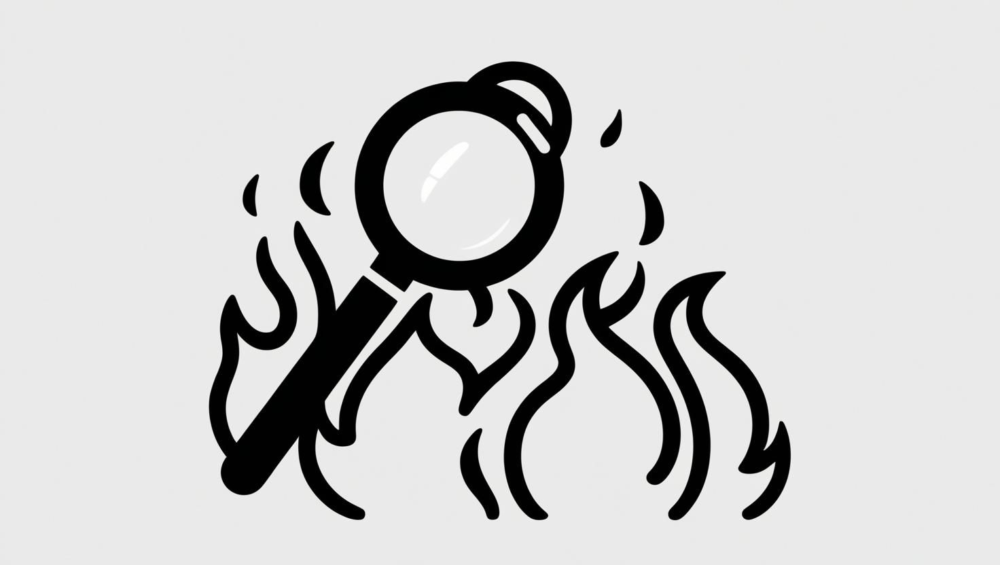
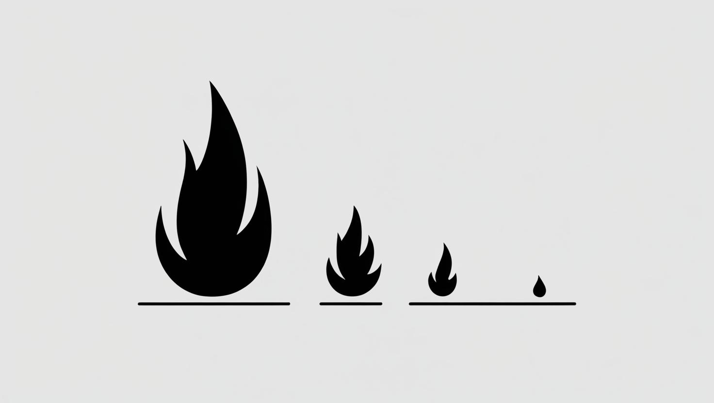
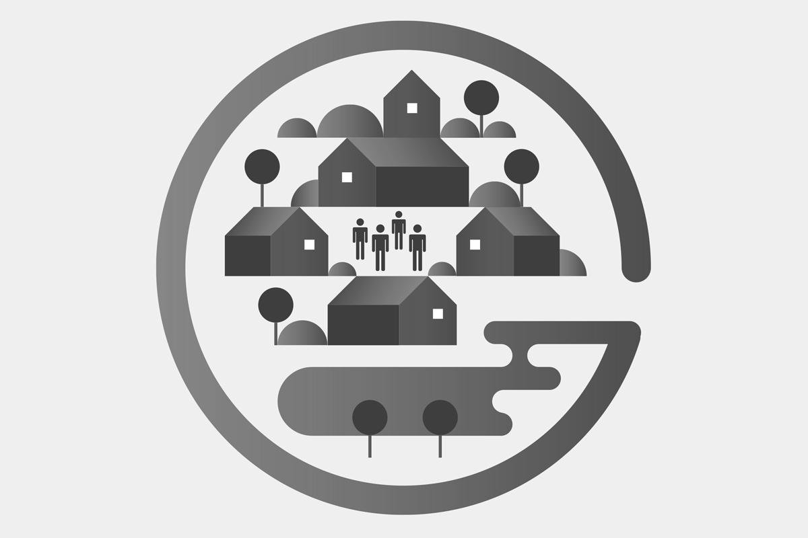

Prevenir é agir antes. Evacuar é salvar-se a tempo.
Marque o local no mapa, indique a data/hora e descreva o que está a ver.
Entenda mais relativamente aos incêndios e o impacto no território.
Visualize mapas interativos com níveis de risco.
Descubra medidas práticas para reduzir o risco.
Conheça onde existem aldeias seguras.
Criado pela Resolução do Conselho de Ministros n.º 157-A/2017, o programa integra a reforma na prevenção e resposta a incêndios rurais, reforçando a segurança de pessoas e bens na interface urbano-florestal.
Aldeia Segura estabelece medidas estruturais para proteger aglomerados situados na interface urbano-florestal: criação e gestão de zonas de proteção, identificação de pontos críticos, e definição de locais de abrigo/refúgio.
Pessoas Seguras centra-se na população: sensibilização para evitar comportamentos de risco, medidas de autoproteção e realização de simulacros dos planos de evacuação, em articulação com municípios e freguesias.
Proteger pessoas e património nos aglomerados em contacto com áreas florestais, através de zonas de proteção, locais de abrigo/refúgio, informação ao público e preparação para evacuar ou permanecer com segurança, conforme a evolução do incêndio.
Execução ao abrigo de protocolo entre a ANEPC, ANMP e ANAFRE, em dois níveis:
Confirma se o teu aglomerado está no programa e conhece o Oficial de Segurança Local (OSL).
Ajuda a manter os dados da tua aldeia atualizados. Sinaliza também problemas que encontres no terreno.
Adiciona informação/comentárioParticipa nos simulacros e divulga as medidas de autoproteção aos vizinhos mais vulneráveis.
Ligue imediatamente 112.